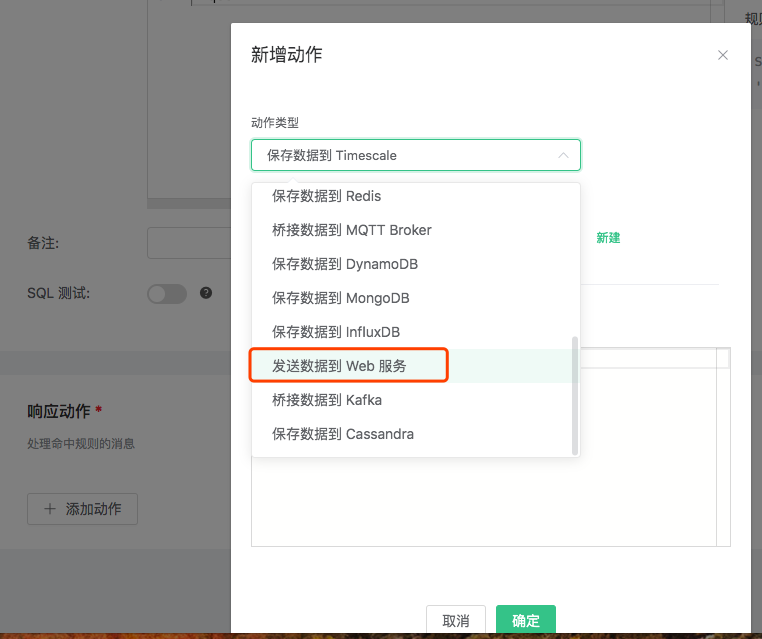
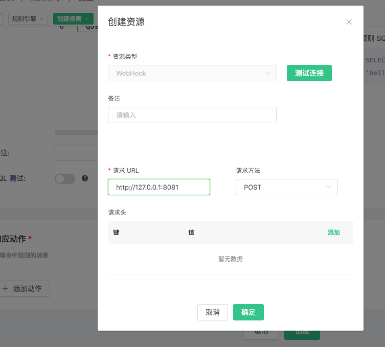
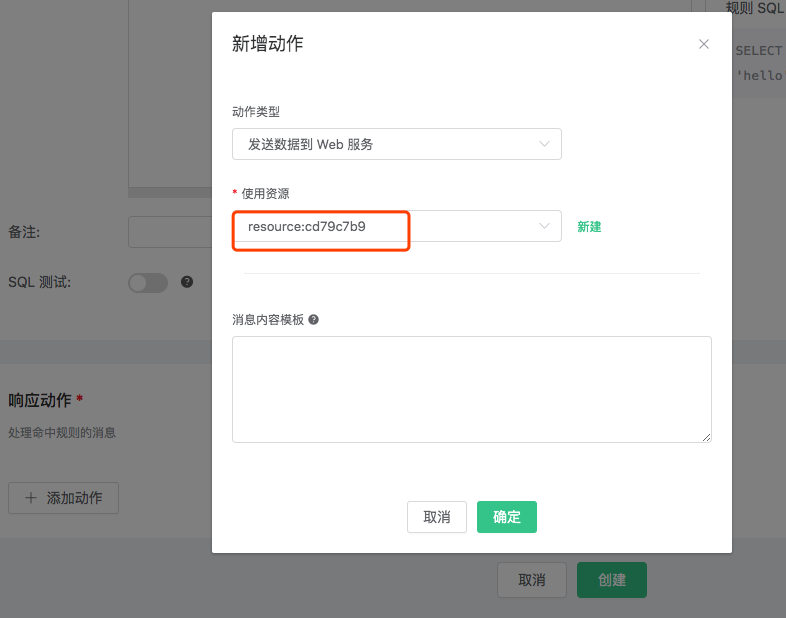
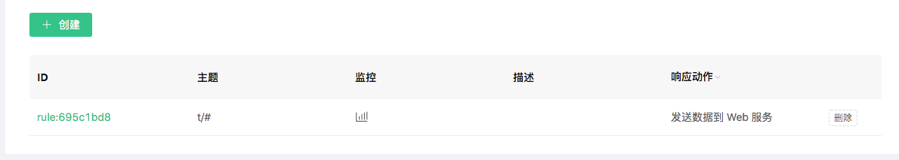
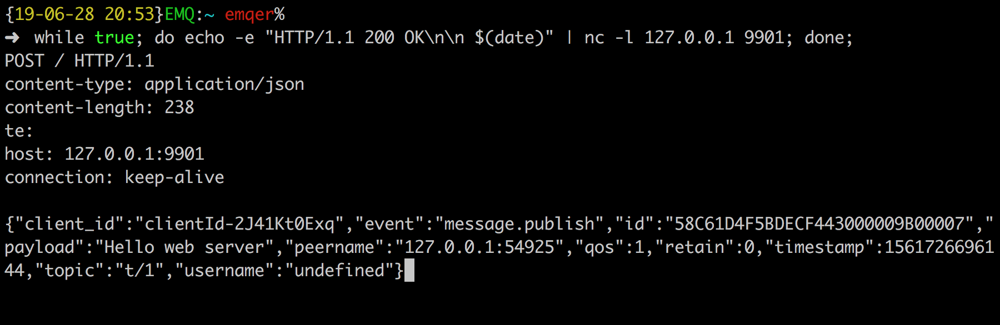

创建规则
使用 Dashboard 创建规则
创建 WebHook 规则
- 搭建 Web 服务，这里使用
nc命令做一个简单的Web 服务:
nc 命令在部分 Linux 操作系统上有问题，无法与 EMQ X 发起的 HTTP 请求连接握手成功，第 7 步可能无法正常进行。
$ while true; do echo -e "HTTP/1.1 200 OK\n\n $(date)" | nc -l 127.0.0.1 8081; done;
创建规则:
打开 emqx dashboard，选择左侧的 “规则” 选项卡。
填写用以处理 t/# 主题的规则 SQL:
SELECT * FROM "t/#" WHERE qos = 1
关联动作:
在 “响应动作” 界面选择 “添加”，然后在 “动作” 下拉框里选择 “发送数据到 Web 服务”。

给动作关联资源:
现在资源下拉框为空，可以点击右上角的 “新建资源” 来创建一个 WebHook 资源:

选择 “WebHook 资源”:

填写资源配置:
填写 “请求 URL” 和请求头(可选):
点击 “测试连接” 按钮，确保连接测试成功，最后点击 “新建” 按钮:

返回响应动作界面，点击 “确认”。

返回规则创建界面，点击 “新建”。

规则已经创建完成，规则列表里展示出了新创建的规则:

发一条消息:
Topic: "t/1"
QoS: 1
Payload: "Hello web server"
然后检查 Web 服务是否收到消息:

通过 CLI 创建简单规则
创建 Inspect 规则
创建一个测试规则，当有消息发送到 't/a' 主题时，打印消息内容以及动作参数细节。
规则的筛选 SQL 语句为: SELECT * FROM "t/a";
动作是: "打印动作参数细节"，需要使用内置动作 'inspect'。
$ ./bin/emqx_ctl rules create \
"SELECT * FROM \"t/a\" \
'[{"name":"inspect", "params": {"a": 1}}]' \
-d 'Rule for debug'
Rule rule:803de6db created
上面的 CLI 命令创建了一个 ID 为 'Rule rule:803de6db' 的规则。
参数中前两个为必选参数:
- SQL 语句: SELECT * FROM "t/a"
- 动作列表: [{"name":"inspect", "params": {"a": 1}}]。动作列表是用 JSON Array
格式表示的。name 字段是动作的名字，params 字段是动作的参数。注意
inspect动作是不需要绑定资源的。
最后一个可选参数，是规则的描述: 'Rule for debug'。
接下来当发送 "hello" 消息到主题 't/a' 时，上面创建的 "Rule rule:803de6db" 规则匹配成功，然后 "inspect" 动作被触发，将消息和参数内容打印到 emqx 控制台:
$ tail -f log/erlang.log.1
(emqx@127.0.0.1)1> [inspect]
Selected Data: #{client_id => <<"shawn">>,event => 'message.publish',
flags => #{dup => false,retain => false},
id => <<"5898704A55D6AF4430000083D0002">>,
payload => <<"hello">>,
peername => <<"127.0.0.1:61770">>,qos => 1,
timestamp => 1558587875090,topic => <<"t/a">>,
username => undefined}
Envs: #{event => 'message.publish',
flags => #{dup => false,retain => false},
from => <<"shawn">>,
headers =>
#{allow_publish => true,
peername => {{127,0,0,1},61770},
username => undefined},
id => <<0,5,137,135,4,165,93,106,244,67,0,0,8,61,0,2>>,
payload => <<"hello">>,qos => 1,
timestamp => {1558,587875,89754},
topic => <<"t/a">>}
Action Init Params: #{<<"a">> => 1}
Selected Data列出的是消息经过 SQL 筛选、提取后的字段，由于我们用的是select *，所以这里会列出所有可用的字段。Envs是动作内部可以使用的环境变量。Action Init Params是初始化动作的时候，我们传递给动作的参数。
创建 WebHook 规则
创建一个规则，将所有发送自 client_id='Steven' 的消息，转发到地址为 'http://127.0.0.1:9910' 的 Web 服务器:
- 规则的筛选条件为: SELECT username as u, payload FROM "t/a" where u='Steven';
- 动作是: "转发到地址为 'http://127.0.0.1:9910' 的 Web 服务";
- 资源类型是: web_hook;
资源是: "到 url='http://127.0.0.1:9910' 的 WebHook 资源"。
首先我们创建一个简易 Web 服务，这可以使用
nc命令实现:$ while true; do echo -e "HTTP/1.1 200 OK\n\n $(date)" | nc -l 127.0.0.1 9910; done;使用 WebHook 类型创建一个资源，并配置资源参数 url:
1). 列出当前所有可用的资源类型，确保 'web_hook' 资源类型已存在:
$ ./bin/emqx_ctl resource-types list resource_type(name='web_hook', provider='emqx_web_hook', params=#{...}}, on_create={emqx_web_hook_actions,on_resource_create}, description='WebHook Resource') ...2). 使用类型 'web_hook' 创建一个新的资源，并配置 "url"="http://127.0.0.1:9910":
$ ./bin/emqx_ctl resources create \ 'web_hook' \ -c '{"url": "http://127.0.0.1:9910", "headers": {"token":"axfw34y235wrq234t4ersgw4t"}, "method": "POST"}' Resource resource:691c29ba created上面的 CLI 命令创建了一个 ID 为 '
然后创建规则，并选择规则的动作为 'data_to_webserver':
1). 列出当前所有可用的动作，确保 'data_to_webserver' 动作已存在:
$ ./bin/emqx_ctl rule-actions list action(name='data_to_webserver', app='emqx_web_hook', for='$any', types=[web_hook], params=#{'$resource' => ...}, title ='Data to Web Server', description='Forward Messages to Web Server') ...2). 创建规则，选择 data_to_webserver 动作，并通过 "$resource" 参数将
$ ./bin/emqx_ctl rules create \ "SELECT username as u, payload FROM \"message.publish\" where u='Steven'" \ '[{"name":"data_to_webserver", "params": {"$resource": "resource:691c29ba"}}]' \ -d "Forward publish msgs from steven to webserver" rule:26d84768上面的 CLI 命令与第一个例子里创建 Inspect 规则时类似，区别在于这里需要把刚才创建的资源 '
现在我们使用 username "Steven" 发送 "hello" 到任意主题，上面创建的规则就会被触发，Web Server 收到消息并回复 200 OK:
$ while true; do echo -e "HTTP/1.1 200 OK\n\n $(date)" | nc -l 127.0.0.1 9910; done; POST / HTTP/1.1 content-type: application/json content-length: 32 te: host: 127.0.0.1:9910 connection: keep-alive token: axfw34y235wrq234t4ersgw4t {"payload":"hello","u":"Steven"}